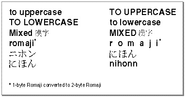
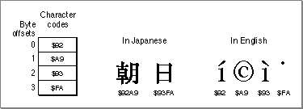

Legacy Document
Important: The information in this document is obsolete and should not be used for new development.
Important: The information in this document is obsolete and should not be used for new development.


Modifying Text
The Text Utilities include a number of routines that you can use to modify the contents of strings. Several of these routines operate on Pascal strings, while others operate on text strings.Several of the text modification routines also take a script code parameter, which is used to indicate which script system's resources should be used to define the results of various character modifications. Script codes are described in the chapter "Script Manager" in this book.
There are three kinds of text modification routines:
- routines that convert the case of characters and strip diacritical marks from characters in a string
- routines that truncate a string to make it fit into a specified area on the screen
- routines that search for a character pattern in a string and replace it with a different character pattern
Converting Characters and Stripping Marks in Strings
Several Text Utilities routines allow you to convert the case of characters and strip diacritical marks from strings. They can be useful when you want to present strings in a simplified form or to store strings in a form that can increase the efficiency of a comparison.You can use the
UpperStringprocedure to convert any lowercase letters in a Pascal string into their uppercase equivalents; however, this procedure assumes that you are using the Macintosh file system conversion rules and does not use any of the information in the international resources to perform its conversion.You can use the
UppercaseTextprocedure to convert any lowercase letters in a text string into their uppercase equivalents. This procedure takes a script code parameter and uses the case conversion information in the string-manipulation resource for the indicated script system to convert the characters.The
LowercaseTextprocedure converts any uppercase letters in a text string into their lowercase equivalents. This procedure takes a script code parameter and uses the case conversion information in the string-manipulation resource for the indicated script system to convert the characters.The
StripDiacriticsprocedure removes any diacritical marks from a text string. This procedure takes a script code parameter and uses the information in the string-manipulation resource for the indicated script system to determine what character results when a diacritical mark is stripped.The
UppercaseStripDiacriticsprocedure combines the effects of theUppercaseTextandStripDiacriticsprocedures: it converts any lowercase letters to their uppercase equivalents and strips any diacritical marks from characters in a text string. This procedure also takes a script code parameter, which specifies which script system's resources are used to determine conversion results.Certain other routines in Macintosh system software convert characters in a text string. The
TransliterateTextfunction converts characters from one subscript into the closest possible approximation in a different subscript within the same script system. TheIntlTokenizefunction converts text into language-independent tokens, for further processing by interpreters or compilers.TransliterateTextandIntlTokenizeare documented in the chapter "Script Manager" in this book.Fitting a String Into a Screen Area
When you want to ensure that a string fits in a certain area of the screen, you can use either theTruncStringorTruncTextroutine. Each performs the same operation: truncating the string (removing characters from it) so that it fits into a specified pixel width. TheTruncStringfunction truncates a Pascal string and theTruncTextfunction truncates a text string.Both of the truncation functions use the current font--the font currently in use in the current graphics port--and its script to determine where the string should be truncated. The font size is used to determine how many characters can completely fit in the number of pixels specified as a parameter to the function.
Both functions also take a parameter that specifies where any needed truncation is to occur. You can specify that characters are to be truncated from the end or from the middle of the string, as MPW does with pathnames, for example.
A truncation indicator is inserted into a string after characters are truncated; in the U.S. Roman script system, the ellipsis (...) is used for this purpose. You should specify the truncation indicator by token, rather than by specific character code, so that the proper indicator is applied to each script system's text. Specify a token from the untoken table of the tokens (
'itl4') resource of the script system of the current font. The untoken table is described in the appendix "International Resources" in this book.Truncating a string in its middle is commonly used on pathnames, where you want the user to see the beginning and end of the full path, but are willing to sacrifice some of the information in the middle, as shown in Figure 5-7.
Figure 5-7 Truncating a pathname in its middle
 The code in Listing 5-2 performs the truncation that is illustrated in Figure 5-7. Assuming that each character in the string requires 12 pixels, then 480 pixels will be wide enough to hold 40 characters:
Listing 5-2 Truncating a pathname
str := "Mymac:myfolder:mysubfolder:myownfolder:myfile" ans := TruncString( 480, str, truncEnd ); {480 pixels available} {str would be "Mymac:myfolder:mysubfolder:myownfolder:..."} ans := TruncString( 480, str, truncMiddle ); {str would now be "Mymac:myfolder:mysub...:myownfolder:myfile"}Since the truncation functions can alter the length and contents of the string that you pass in, it is good practice to make a copy of a string before passing it to one of them.Replacing a Portion of a String
The Text Utilities include two routines for replacing a portion of a string with another string. Each of these routines searches through a string looking for the pattern string. Whenever it finds an occurrence of the pattern string, the routine replaces it with the new string.The
ReplaceTextfunction takes information about the current script system into account: it looks through the string character-by-character rather than byte-by-byte. Specifically, this means thatReplaceTextproperly examines strings that contain both 1-byte and 2-byte characters.The
Mungerfunction searches for a sequence of bytes and replaces it with another sequence of bytes that you specify. It provides the same capability asReplaceText, but searches for a byte pattern without regard to character length. In a string that contains a mixture of 1-byte and 2-byte characters,Mungercan, under some conditions, wrongly find a pattern string. This is because the second byte in some 2-byte characters can be wrongly regarded as a 1-byte character.For example, suppose that you want to search a string for the copyright ("©") character and replace each occurrence with the string "Registered". If you use
Mungerto search a string with Japanese characters in it,Mungerwill mistakenly find and replace the byte with value A9, which is really part of a 2-byte character in the Japanese script system. Figure 5-8 shows how the Japanese word for "morning sun" could be incorrectly identified as containing the copyright character.Figure 5-8 Replacing a portion of a string with 1-byte and 2-byte characters

Mungerprovides a great deal of power, allowing you to perform many interesting substitutions; however, you need to limit your use ofMungerin applications that are script-aware, or else do your own checking for 2-byte characters.Listing 5-3 uses the
ReplaceTextandTruncTextfunctions. It assumes that you haveStr255strings containing base text and substitution text and that you want the result to fit in a specified number of pixels.Listing 5-3 Substituting and truncating text
CONST maxInt = 32767; VAR baseString: Str255; subsString: Str255; baseHandle: Handle; subsHandle: Handle; keyStr: Str15; sizeL: LongInt; myWidth: Integer; length: Integer; result: Integer; myErr: OSErr; BEGIN baseString:'abcdefghijklmnopqrstuvwxyzabcdefghijklmnopqrstuvwxyz'; subsString := 'KILROY WAS HERE'; {insert this into baseString} keyStr := 'mnop'; {replace this with subString} myWidth := 500; {truncate string at this width} sizeL := ord(baseString[0]); myErr := PtrToHand(@baseString[1], baseHandle, sizeL); IF myErr <> noErr THEN DoError(myErr); sizeL := ord(subsString[0]); myErr := PtrToHand(@subsString[1], subsHandle, sizeL); IF myErr <> noErr THEN DoError(myErr); result := ReplaceText(baseHandle, subsHandle, keyStr); IF result < 0 THEN DoError(result); sizeL := GetHandleSize(baseHandle); IF MemError <> noErr THEN DoError(MemError); length := sizeL; HLock(baseHandle); IF MemError <> noErr THEN DoError(MemError); {Memory Manager error} result := TruncText(myWidth, baseHandle^, length, TruncEnd); IF result < 0 THEN DoError(result); DrawText(baseHandle^, 0, length); HUnlock(baseHandle); IF MemError <> noErr THEN DoError(myErr); {Memory Manager error} END;The code in Listing 5-3 first calls theReplaceTextfunction to replace a portion of the base string (the string initialized to contain the alphabet) with another string. Since two of the parameters toReplaceTextare string handles, the code first creates handles to the two strings and verifies that no errors occurred. It then calls theTruncTextfunction to remove characters from the end of the modified base string so that the string can be displayed, using the text font, size, and style settings in the current graphics port, in an area 500 pixels wide. Once the string is truncated, the code calls the QuickDraw procedureDrawTextto draw the string in the current graphics port on the screen.